Ders 19
Konumuz vektör alanları (vector fields) ve çizgi entegralleri (line integrals). Bundan önceki derslerde çift entegral (double integral) konusunu işledik, fakat o tür entegraller çizgi entegrallerinden tamamen farklıdır, yani bu dersi takip ederken çift entegraller ile bağlantıları düşünmemek daha iyi olur, kafalar karışmasın.
Vektör Alanları
Vektör alanları bir vektördürler aslında, diyelim ki $\vec{F}$
$$ \vec{F} = M\hat{i} + N\vec{j} $$
Farklı olan $M,N$ kendilerinin $x,y$'nin bir fonksiyonu olmalarıdır. Bu demektir ki kordinat sistemindeki her $x,y$ kombinasyonu için değişik bir vektör olacaktır. Bir mısır tarlasında her noktada mısır vardır, vektör alanında her noktada bir vektör vardır [hoca bu analojiyi mısırlar uzun, yönleri olan şeyler olduğu için kullanıyor herhalde]. Daha önce $\vec{r}(t)$ bağlamında $t$ değişkenine bağlılığı gördük, fakat o tek değişken idi, zaten bir eğriyi vektör ile temsil etmek için öyle olması gerekiyordu, burada birden fazla değişken $x,y$'ye bağımlılık var.
Bu kavram bir sıvı, bir rüzgar içindeki akış vektörlerini temsil etmek için kullanılabilir mesela. Ya da kuvvet alanı (force field) kavramı -- bu kavram Star Wars filminden bir kavram değil. Yeryüzünde elimizde bir cismi herhangi bir yerde tuttuğumuzda onun üzerinde etki eden bir kuvvet vektörü var, bu vektör her noktada değişik, ve tüm bu vektörlerin toplamı bir kuvvet alanı oluşturuyorlar, ki bu alan bir vektör alanıdır.
Biz bu derste konuya pür matematiksel olarak bakıyoruz, sadece arka plandaki bu fiziksel bağlantıyı motivasyon açısından aklımızda tutabiliriz.
Önce çizimden başlayalım
Örnek
$$ \vec{F} = 2\hat{i} + \hat{j} $$
Tam $x,y$'ye bağlantıdan bahsetmiştik, bağlantısız bir tane verdik! Ama örneği şöyle görebiliriz, bu alan her $x,y$ için aynı vektöre sahip. Yani yine $x,y$'yi merkez alarak düşünüyoruz, sadece vektörün her noktada aynı olduğunu söylemiş oluyoruz.
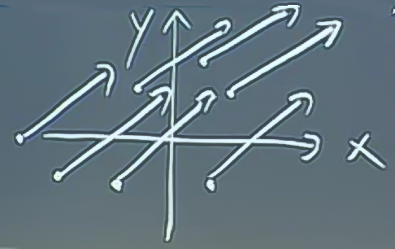
Örnek
$$ \vec{F} = x\hat{i} $$
Y-ekseni üzerinde, yani $x$'in sıfır olduğu noktada (zaten hiç $y$ yok) vektör sıfır büyüklüğünde. Diğer noktalarda vektör yatay, $x$ büyüdükçe, ya a eksi yönde küçüldükçe, sağa ya da sola doğru vektörün büyüklüğü de değişecek.
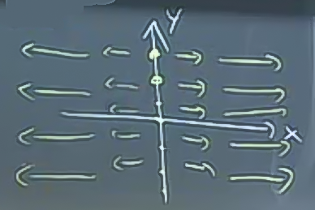
Aslında bu tür çizimleri çoğunlukla bilgisayara yaptırıyoruz, ama kabaca vektör alanlarının neye benzediğini hayal edebilmek ise yarıyor.
Örnek
$$ \vec{F} = x\hat{i} + y\hat{j} $$
Bu alanın ilginç bir geometrik sonucu var. Orijinden herhangi bir noktaya çizilebilecek bir vektörü (... ile belirtiliyor) alıp, kopyalarsak, bu kopyayı o noktadan başlayacak şekilde yerleştirirsek, doğru sonucu elde etmiş oluruz.
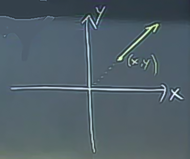
Hepsini çizince şu şekil ortaya çıkıyor.
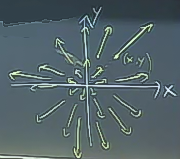
Bu çizim tekniği bu örnekte ise yaradı çünkü $x,y$ hem vektör büyüklüğünü, hem de alan bağlamında önün başlangıç noktasını belirliyor.
Örnek
$$ \vec{F} = -y\hat{i} + x\hat{j} $$
Yine orijinden başlama numarasını düşünürsek şimdi elimizde $< -y,x >$ vektörü var, acaba bu vektör $< x,y >$ göre nasıl bir vektör?
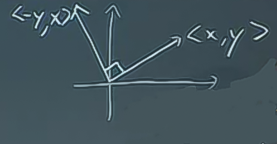
Bu iki vektörün arasında 90 derece vardır. O zaman bu $< x,y >$'ye dik olan kopyayı almamız lazım, ve onu $x,y$'den başlatmamız lazım.
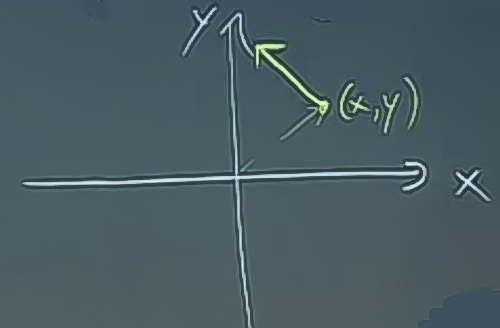
Hepsini çizersek
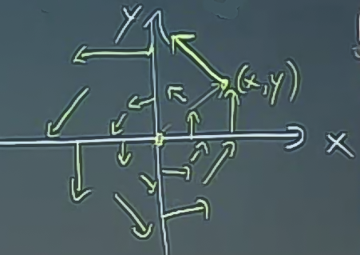
Bu alan mesela orijin etrafında her yuvarlakta sabit hızda bir akışı olan bir sıvıyı temsil ediyor olabilir. Yani vektör alanı bir hız alanı (velocity field) olabilir. İlginç sorulardan biri, sıvı içindeki bir parçacığın halkaların birinde tam bir atmasının ne kadar zaman alacağı. Cevap $2\pi$ çünkü halkanın uzunluğu $2\pi \cdot r$, yani $2\pi$ çarpı yarıçap (radius). Bu cevap birim açısal hız (unit angular velocity), 1 radyan / zaman. Hızın büyüklüğü bir halka içinde sabit, çünkü hızın büyüklüğü demek vektörün büyüklüğü demek, eğer halkayı biz seçtiysek, o halkanın orijinden uzaklığı aynı olacaktır, bu uzaklığın kopyası da aynı büyüklükte olacaktır.
Kuvvet alanlarına gelelim, yani şimdi vektör alandaki vektörler kuvvetleri temsil edecekler. Şimdi şu senaryoyu düşünelim. Bir parçacığın üzerine bir kuvvet uygulanıyor ve bu parçacık bir seyahat çizgisi üzerinde ilerliyor. Fizikten bilindiği gibi kuvvetin yaptığı "iş (work)" kuvvetin o kuvvetin sayesinde ne kadar yer değişikliği olduğunun vektörü (displacement vector) ile noktasal çarpımına eşittir. Eğer gidişat düz olursa, ve kuvvet sabitse bu hesap basitçe yapılabilir, ama daha çetrefil bir gidişat takip ediliyorsa ve kuvvet o sırada sürekli değişiyorsa, o zaman üzerinden entegrasyon yapmamız gerekir.
İş ve Çizgi Entegrali
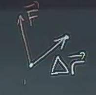
$$ W = (kuvvet)\cdot(mesafe) = \vec{F}\cdot\Delta\vec{r} $$
$W$ yapılan iş (work)'i temsil ediyor.
Fakat senaryomuzda demiştik ki gidişat karmaşık ve güç sürekli değişiyor.
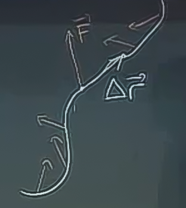
O zaman iş hesabını yapmak için gidişatı ufak parçalara ayırmalıyım, o parçalar için çarpımı yapıp sonuçları toplamalıyım. Parçalar olabileceği kadar ufak olmalı tabii ki, bu ne demektir? Bir entegral demektir. Yani
Bir gidişat $C$ üzerinde yapılan iş
$$ W = \int_C \vec{F} \cdot \mathrm{d}\vec{r} $$
Notasyonun hesapsal anlamına bakalım şimdi. Şöyle görebiliriz
$$ = \lim_{\Delta r_i \to 0} \sum_i \vec{F} \cdot \Delta\vec{r}_i$$
$$ =
\lim_{\Delta t \to 0} \sum_i
\vec{F} \cdot \bigg( \frac{\Delta\vec{r}}{\Delta t} \Delta t
\bigg)
$$
Aslında hem bölüme, hem bölene $\Delta t$ ekleyerek hiç bir şey değiştirmedik, ama yeni ortaya çıkan terim $\Delta\vec{r} / \Delta t$ hız vektörü $d\vec{r}/dt$'ye eşit. Limitin $\Delta t$'ye dönüştüğüne dikkat.
Yani ilk baştaki entegralimizi şu şekilde hesaplayabiliriz
$$ = \int_{t_1}^{t_2} \vec{F} \cdot \frac{d\vec{r}}{\mathrm{d} t} \mathrm{d} t $$
Örnek
Şu kuvvetin
$$ \vec{F} = -y\hat{i} + x\hat{j} $$
Şu parametrik eğri $C$ üzerinde
$$ x = t $$
$$ y = t^2 $$
$$ 0 \le t \le 1 $$
yaptığı işi hesapla.
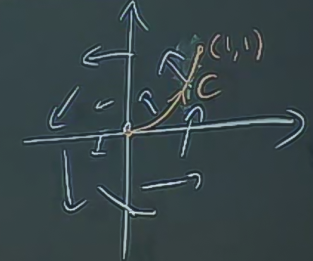
Bu arada, "$C$'yi nereden buldun?" diye bir soru gelebilir, bu yanlış bir soru. $C$'yi bulmadık, o bize sorunun içinde verildi, yani elimizdeki veri bu. Kuvvet alanı ve eğri tamamen ayrı yerlerden, ayrı şekilde tanımlanmış olabilir.
$$ \int_C \vec{F} \cdot \mathrm{d}\vec{r} = \int_{0}^{1} \vec{F} \cdot \frac{\mathrm{d}\vec{r}}{\mathrm{d} t} \mathrm{d} t $$
$\vec{F}$ nedir?
$$ \vec{F} = <-y,x> = <-t^2,t> $$
Hız nedir?
$$ dx/dt = 1 $$
$$ dy/dt = 2t $$
O zaman
$$ W = \int_{0}^{1} <-t^2,t>\cdot<1,2t> \mathrm{d} t $$
$$ = \int_{0}^{1} (-t^2 + 2t^2) \mathrm{d} t $$
$$ = \int_{0}^{1} t^2 \mathrm{d} t = \frac{1}{3} $$
Başka Bir Yol
Vektör alanımızın bileşenlerinin
$$ \vec{F} =
olduğunu düşünelim, ve
$$ d\vec{r} =
Çünkü $\vec{r}$ parametrize edilmiş bir vektör, ve bileşenleri $x,y$ şeklinde. O zaman
$$ \vec{F} \cdot d\vec{r} = M dx + N dy $$
olacaktır. Bu eşitlik üzerinden problemlerin çoğunlukla şu şekilde yazıldığını görürsünüz
$$ \int_C \vec{F} \cdot \mathrm{d}\vec{r} = \int_C M \mathrm{d} x + N \mathrm{d} y $$
Eşitliğin sağındaki vektör alanı değil artık, ama aslında aşağı yukarı aynı şeyler. Yani aradaki fark bir fonksiyonun gradyanı ile kısmi diferansiyelleri arasındaki ilişkiye benziyor. Notasyon farklı, ama aslında aynı içeriğe sahipler.
Peki bu yeni formdaki çizgi entegralini nasıl hesaplayalım? Hem $M$ hem $N$ içinde $x,y$ var, eğer entegrali sadece $dx$, sadece $dy$ için alırsak yine $y$'ler, $x$'ler ortaya çıkacak, fakat biz bunu istemiyoruz, biz tek bir sayı istiyoruz. Buradaki püf nokta şu, eğri boyunca $x,y$ birbiriyle bağlantılı. Yani $M,N$ içeren bir formülü entegre ediyor olabiliriz, ama $C$ boyunca aslında sadece tek bir parametre var. Bu tek değişkn $x$ olabilir, $y$ olabilir, $t$ olabilir. O zaman
Metot: $x,y$ değişkenlerini tek bir değişken bağlamında belirt. O tek değişkeni diğerlerinin yerine geçir.
Biraz önceki örnek
$$ \int_C \vec{F} \cdot \mathrm{d}\vec{r} = \int_C -y \mathrm{d} x + x \mathrm{d} x $$
Her şeyi yeni, tek bir değişken $t$ bağlamında belirtelim. Problem zaten şunu vermişti
$$ x = t $$
$$ y = t^2 $$
$dx,dy$'yi bulmak için
$$ dx = dt $$
$$ dy = 2tdt $$
O zaman entegral şuna dönüşür
$$ = \int_C -t^2 \mathrm{d} t + t \cdot 2t \mathrm{d} t$$
$$ = \int_0^1 t^2 \mathrm{d} t = \frac{1}{3}$$
$\int_C \vec{F} \cdot \mathrm{d} \vec{r}$ entegrali $C$'ye bağlıdır, parametrizasyonun nasıl yapıldığına bağlı değildir. Yani hangi değişkeni istersek onu seçeriz, mesela yukarıdaki örnekte
$$ \left\{ \begin{array}{l} x = \sin\theta \\ y = \sin^2\theta \end{array} \right. $$
$$ 0 \le \theta \le \frac{\pi}{2} $$
farz etmek te mümkündür. Sonra $dx,dy$ bulunurdu, bir sürü trigonometrik işlemden sonra aynı sonucu bulabilirdik. Daha zor olurdu ama bulunurdu. O zaman bir tavsiye, işimizi en kolaylaştıracak parametrizasyonu kullanmak en iyisi. Üstte en sondaki parametrizasyon pek iyi değil.
Geometrik Yaklaşım
Parametrizasyon, vs. ile her zaman bir çözüme varılabilir. Fakat bazen geometrik olarak yaklaşmak çözümü daha hızlandırabiliyor.
Vektör $\Delta \vec{r}$'yi düşünelim.
Eğer bu vektörü çok ufak alırsam, vektörün gidişata teğet olduğunu düşünebiliriz. Yani birim teğet vektör ile aynı yönü gösterecek, uzunluğu ise gidişat üzerinde alınan mesafenin ufak bir parçası $\Delta s$ olacak.
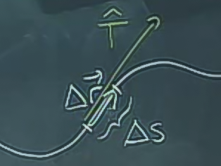
$$ d\vec{r} =
olduğu söylemiştik, o zaman aynı şekilde
$$ d\vec{r} = \vec{T} \mathrm{d} s $$
Dikkat eşitliğin sağ tarafındaki noktasal çarpım değil, düz çarpım. Üstteki ifadeyi şu şekilde de görebiliriz: $ds$ uzunluğunun $\vec{T}$ yönündeki (yön sadece, çünkü $\vec{T}$ birim vektör) yansıması, bileşeni.
Her şeyi $dt$'ye bölünce elimize anlamlı bir ifade çıktığını görebiliyoruz
$$ \frac{d\vec{r}}{dt} = <\frac{dx}{dt}, \frac{dy}{dt}> = \vec{T} \ \frac{ds}{dt} $$
Hız vektörünün yönü gidişatın yönüne, $\vec{T}$'ye, teğet.
Yani geometrik düşünerek şunu da söylemem mümkün,
$$ \int_C \vec{F} \cdot \mathrm{d}\vec{r} = \int_C M \mathrm{d} x + N \mathrm{d} y = \int_C \vec{F} \cdot \vec{T} \mathrm{d} s $$
$\vec{F} \cdot \vec{T}$'yi tek sayısal (scalar) bir nicelik olarak görebiliriz, ki bu tek sayı, kuvvetin teğet yönünde olan etkisi, kuvveti o yöne "yansıtınca (projection)" ele geçen değerdir. Sonra bu yansımayı alıp tüm eğri boyunca entegre ediyorum.
Örnek
$C$ = ortası orijinde olan $a$ yarıçapındaki çember, ve gidişat saat yönünün tersi yönde.
$$ \vec{F} = x\hat{i} + y\vec{j} $$
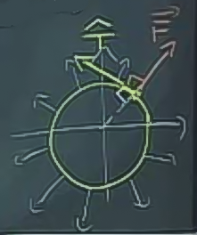
Fiziği iyi olanlar sonucun ne olacağını tahmin edebilir, sıfır olacak çünkü gidişat her zaman kuvvet vektörlerine dik.
Yani $\vec{F} \perp \vec{T}$, o zaman $\vec{F} \cdot \vec{T} = 0$, yani
$$ \int_C \vec{F} \cdot \vec{T} \mathrm{d} s = 0$$
Sonuç basit şekilde hesaplandı. Burada iki saat parametrizasyon yapabilirdik, vs. ve sonuç yine aynı çıkardı.
Örnek
Üstteki aynı $C$, ama $\vec{F} = -y\hat{i} + x\hat{j}$. Bu durumda her iki vektör aynı yöne işaret ediyor (ama aynı büyüklükte değiller, $\vec{T}$'nin birim vektör olduğunu unutmayalım).
Yani $\vec{F} // \vec{T}$, o zaman $\vec{F} \cdot \vec{T} = |\vec{F}| = a$.
Artık entegrali çok hızlı şekilde hesaplayabiliriz.
$$ \int_C \vec{F} \cdot \vec{T} \mathrm{d} s = \int_C a \mathrm{d} s = a \int_C \mathrm{d} s = a \cdot C \textit{'nın uzunluğu} $$
$C$'nin uzunluğu nedir? $2\pi a$. Yani üstteki entegral
$$ = 2\pi a^2 $$
Eğer bu hesabı parametrizasyon ile yapsaydık?
$$ x = a\cos\theta $$
$$ y = a\sin\theta $$
$$ 0 \le \theta \le 2\pi $$
$$ \int_C -y \mathrm{d} x + x \mathrm{d} y $$
$$ = \int_C -(a\sin\theta)(-a\sin\theta \mathrm{d}\theta) + (a\cos\theta)(a \cos\theta \mathrm{d}\theta) $$
$$ = \int_0^{2\pi} a^2 (\sin^2\theta + \cos^2\theta) \mathrm{d}\theta $$
$$ = \int_0^{2\pi} a^2 \mathrm{d}\theta $$
Aynı sonuca eriştik.
Soru
$C$ eğrisi xy düzleminde $x^2+y^2=1$ çemberi, ve yönü saat yönünün tersinde olsun. Şu çizgi entegralini hesaplayın.
$$ \int_C (2x-y) \mathrm{d} x + (x+3y)) \mathrm{d} y $$
Parametrizasyon için kare toplamı 1 olan formülleri bulalım. Bunlar
$$ x = \cos t $$
$$ y = \sin t $$
$$ dx/dt = -\sin t$$
$$ dy/dt = \cos t $$
$$ = \int_0^{2\pi} \bigg( 2\cos(t) - \sin t \bigg)(-\sin t ) \mathrm{d} t + \bigg(\cos t + 3\sin t \bigg) \cos t \mathrm{d} t $$
$$ = \int_0^{2\pi} \bigg( -2\cos(t)\sin t + \sin^2 t + \cos^2(t) + 3 \sin t \cos t \bigg) \mathrm{d} t $$
$$ = \int_0^{2\pi} \bigg( \cos t \sin t + 1 \bigg) \mathrm{d} t $$
$\cos t \sin t$'nin entegrali nedir? Birbirinin türevi olan terimler çarpım olarak aynı formüle olunca bir numara yapmak mümkün oluyor. Şunu diyebiliyoruz mesela, $u=\sin(t)$ ve $du=\cos(t)dt$, ve $\int u \mathrm{d} u = u^2/2$ olacağı için,
$$ \int \cos t \sin t \mathrm{d} t = \frac{\sin^2(t)}{2} $$
O zaman
$$ = \frac{\sin^2(t)}{2} + t \bigg|_0^{2\pi} $$
$$ = 2\pi $$
Ekler
Skalar Alanlar Uzerinden Cizgi Entegral
Çizgi entegrallerinin bir diğer şekli onları tek sayısal (skalar) alanlar üzerinden hesaplamak. Başta gördüğümüz vektör alanı üzerinden idi, fakat benzer bir hesabı $\vec{F}$ yerine $f(x,y)$ alanı üzerinden de yapabiliriz, yani 3 boyutlu bir yüzey üzerinde giden bir eğrinin altındaki alan hesabı. Alttaki figürlere bakarsak, ilk figürde bir üç boyutlu bir yükseklik grafiğine kuşbakışı baktığımızı düşünelim; kırmızımsı renkler dağ, daha yüksek, mavimsi deniz, derinliği gösteriyor [1].
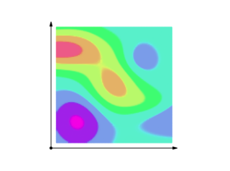 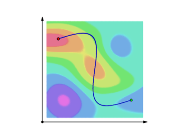
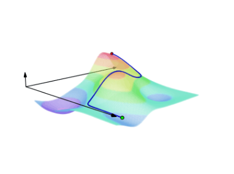 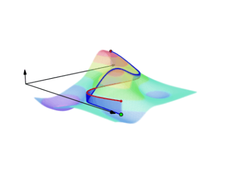
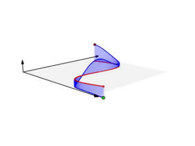 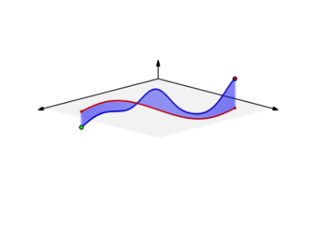
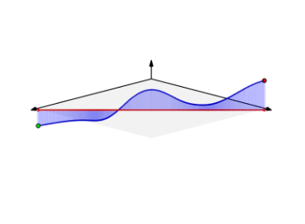
Formülü türetmek için $f(x,y)$ eğrisinin parçalara bölündüğünü düşünelim, ve her $i$'inci parçayı $f$ ile çarpıp toplarsak [2],
$$ \lim_{\Delta s_i \to 0} \sum_{i=1}^{N} f(x_i,y_i) \Delta s_i = \int_C f(x,y) \mathrm{d} s $$
Çoğunlukla $t$ üzerinden parametrize edilmiş formüllerle iş yapacağız. O zaman eğer diferansiyel $\mathrm{d} s$'i $(\mathrm{d} s/ \mathrm{d} t) \mathrm{d} t$ olarak yazarsak, ve bir eğrinin uzunluğunu
$$ \frac{\mathrm{d} s}{\mathrm{d} t} = \sqrt{(\mathrm{d} x/\mathrm{d} t)^2 + (\mathrm{d} y/\mathrm{d} t)^2} $$
ile hesaplayabildiğimiz için, $t=a$, $t=b$ arasındaki entegral
$$ \int_C f(x,y) \mathrm{d} s = \int_C f(x,y) \frac{\mathrm{d} s}{\mathrm{d} t} \mathrm{d} t = \int_{t=a}^{t=b} f(x(t),y(t)) \sqrt{(\mathrm{d} x/\mathrm{d} t)^2 + (\mathrm{d} y/\mathrm{d} t)^2} \mathrm{d} t $$
Örnek
$f(x,y) = x + y$ düzlemi olsun (sola yatık görülen düzlem). Bu düzlem üzerinde ve $y = x^2$ eğrisi altında kalan alanın $0 \le x \le 2$ için hesabı nedir?
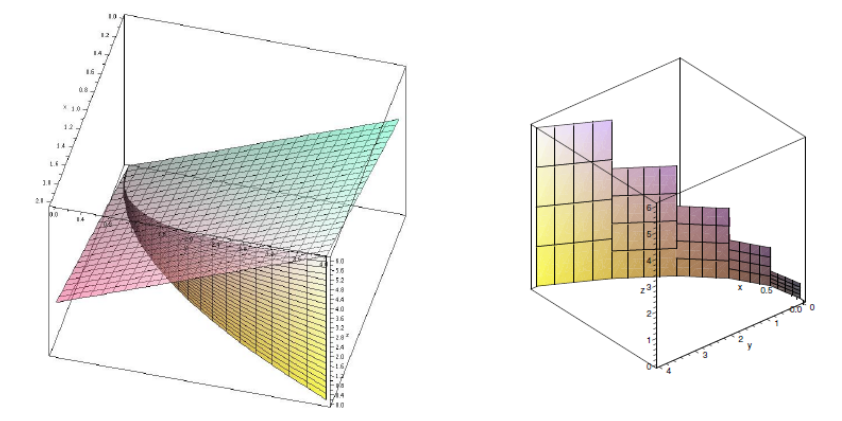
Eğriyi parametrize halde $x=t,y=t^2$ olarak yazabiliriz. $x=t$ olduğu için $0 \le t \le 2$ olacak, ayrıca $\mathrm{d} x/ \mathrm{d} t = 1$, $\mathrm{d} y / \mathrm{d} t = 2t$ o zaman
$$ \int_{0}^{2} f(t, t^2) \sqrt{1 + 4t^2} \mathrm{d} t $$
$$ \frac{167}{48} \sqrt{17} - \frac{1}{12} - \frac{1}{64} \ln (4 + \sqrt{17}) $$
print (167/48*np.sqrt(17) - 1/12. - 1/64 * np.log(4+np.sqrt(17)))
14.228908438910489
Kaynaklar
[1] Libre Texts, Line Integrals https://bit.ly/2kOSKeZ
[2] Strang, Calculus